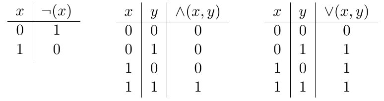
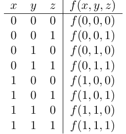
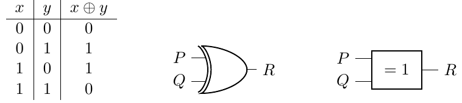
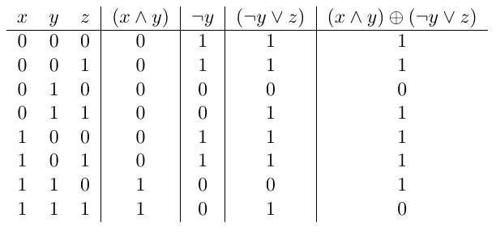

Version PDF de ce cours
Fonctions et expressions booléennes¶
Les fonctions booléennes¶
On a vu précédemment que les circuits électroniques pouvaient être conceptualisés en termes de fonctions booléennes, ce qui signifie qu'ils acceptent un ou plusieurs bits en entrée et produisent un seul bit en sortie.
Si nous désignons \(\neg (x)\) comme la fonction associée à la porte NOT, \(\land (x, y)\) comme celle associée à la porte AND, et \(\lor (x, y)\) comme celle de la porte OR, ces trois fonctions sont caractérisées par les tables de vérité suivantes :

Les trois fonctions booléennes élémentaires \(\neg (x)\), \(\land (x, y)\) et \(\lor (x, y)\) sont utilisées comme bases pour la construction d'autres fonctions booléennes, et peuvent être combinées pour en définir de nouvelles.
Plus généralement, la table de vérité d’une fonction avec \(n\) bits en entrée aura \(2^n\) lignes correspondant aux \(2n\) combinaisons possibles des entrées. Par exemple, une fonction booléenne \(f\) avec trois entrées \(x\), \(y\) et \(z\) sera définie par une table de vérité à \(2^3 = 8\) lignes, de la forme suivante :

Aussi, pour simplifier la définition des fonctions booléennes, on utilisera plutôt ces fonctions comme des opérateurs, et on écrira et dira que :
- \(\neg x\) est la négation de x,
- \(x \land y\) est la conjonction de x et y,
- \(x \lor y\) est la disjonction de x et y.
Ces opérateurs sont désignés comme des opérateurs booléens en l'honneur de Georges Boole, un mathématicien et philosophe du 19e siècle qui a créé ce système de calcul, également connu sous le nom d'algèbre booléenne. Ce calcul repose sur l'utilisation d'opérateurs et de chiffres binaires, appelés également chiffres booléens.
Parmi les opérateurs de base que nous n'avons pas encore abordés, il y a l'opérateur ou exclusif, que l'on note \(x \oplus y\), qui est défini comme suit (avec sa représentation symbolique américaine et européenne) :

La sortie est \(1\) lorsque l'une et une seule de ses entrées est égale à \(1\), et elle renvoie \(0\) dans les autres cas.
Expressions booléennes.¶
En utilisant ces opérateurs, on peut définir n’importe quelle fonction booléenne comme une expression booléenne sur ses entrées. Par exemple, l’égalité suivante définit une fonction \(f\) avec trois paramètres \(x\), \(y\) et \(z\) à l’aide d’une expression booléenne sur ses variables :
Pour calculer la table de vérité associée à la fonction \(f\), on calcule les résultats des sous-expressions, en commençant par les calculs en profondeur puis en remontant. Sur l'exemple précédent, cela revient à calculer les résultats des expressions \(x \land y\) et \(\lnot y\), puis \(\lnot y \lor z\) et enfin le résultat final :

Le calcul avec les opérateurs booléens obéit à quelques identités élémentaires, en voici quelques unes :
| identité | cas 1 | cas 2 |
|---|---|---|
| involutif | \(¬(¬x) = x\) | |
| neutre | \(1 ∧ x = x\) | \(0 \lor x = x\) |
| absorbant | \(0 ∧ x =0\) | \(1 \lor x = 1\) |
| idempotence | \(x \land x = x\) | \(x \lor x = x\) |
| complément | \(x \land \lnot x = 0\) | \(x \lor \lnot x = 1\) |
| commutativité | \(x \land y = y \land x\) | \(x \lor y = y \lor x\) |
| associativité | \(x \land (y \land z) = (x \land y) \land z\) | \(x \lor (y \lor z) = (x \lor y) \lor z\) |
| distributivité | \(x \land (y \lor z) = (x \land y) \lor (x \land z)\) | \(x \lor (y \land z) = (x \lor y) \land (x \lor z)\) |
| De Morgan | \(\lnot (x \land y) = \lnot x \lor \lnot y\) | \(\lnot (x \lor y) = \lnot x \land \lnot y\) |
On peut, à l'aide de ces identités élémentaires, montrer par exemple l’égalité suivante :
| \(\lnot (y \land (x \lor \lnot y))\) | \(= \lnot y \lor \lnot (x \lor \lnot y)\) | De Morgan |
|---|---|---|
| \(= \lnot y \lor (\lnot x \land y)\) | De Morgan et involutif | |
| \(= (\lnot y \lor \lnot x) \land (\lnot y \lor y)\) | distributivité | |
| \(= (\lnot y \lor \lnot x) \land 1\) | complément | |
| \(= (\lnot y \lor \lnot x)\) | neutre | |
| \(= (\lnot x \lor \lnot y)\) | commutativité |
Exercices¶
Question 1
Montrer de deux manières différentes l’égalité suivante :
- en comparant les deux tables de vérité
- en utilisant les identités élémentaires.
\((x ∧ y) ∨ (¬y ∧ z) = (x ∨ ¬y) ∧ (y ∨ z)\)
Question 2
Définir une fonction booléenne \(f\) sur deux variables \(x\) et \(y\) qui vaut \(1\) si et seulement si les deux variables ont la même valeur (qu’elle soit \(0\) ou \(1\)), en utilisant uniquement les opérations NON, ET, OU ou OU exclusif.
Donner sa table de vérité.
Question 3
On considère la fonction booléenne à trois variables suivante :
\(f(x, y, z) = (x ∧ ¬y ∧ ¬z) ∨ (¬x ∧ y ∧ ¬z) ∨ (¬x ∧ ¬y ∧ z)\)
Donner sa table de vérité. Que fait cette fonction ? Donner une expression booléenne plus simple pour cette fonction.
Question 4
Une fonctions booléenne peut être représentée par sa forme normale conjonctive (FNC) ou sa forme normale disjonctive (FND). Par exemple, voici une fonction \(f(a, b)\) dont voici la table de vérité :
| a | b | f(a, b) |
|---|---|---|
| 0 | 0 | 1 |
| 0 | 1 | 0 |
| 1 | 0 | 1 |
| 1 | 1 | 0 |
On peut alors écrire que \(f(a, b) = (\lnot a \land \lnot b) \lor (a \land \lnot b)\). Il s'agit ici de la forme normale disjonctive, car on a des sous-expressions contenant des conjonctions \(\land\) (entre parenthèses), et ces sous-expressions sont séparées par des disjonctions \(\lor\).
On peut également écrire que \(f(a, b) = \lnot ((\lnot a \land b) \lor (a \land b)) = (a \lor \lnot b) \land (\lnot a \lor \lnot b)\), qui est la forme normale conjonctive.
En vous basant sur sa table de vérité, donnez la forme normale disjonctive de l'opérateur XOR \(\oplus\).
\(x \oplus y = ...........................................\)